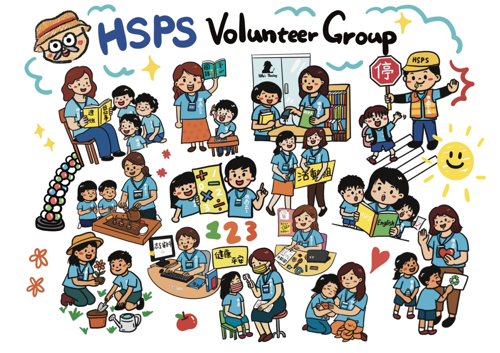
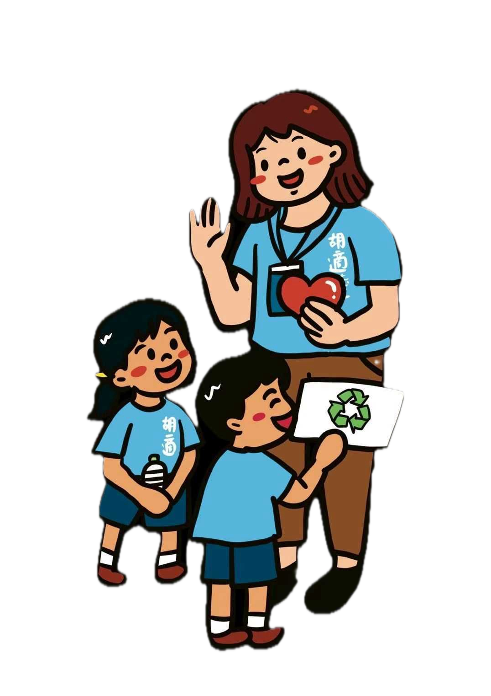
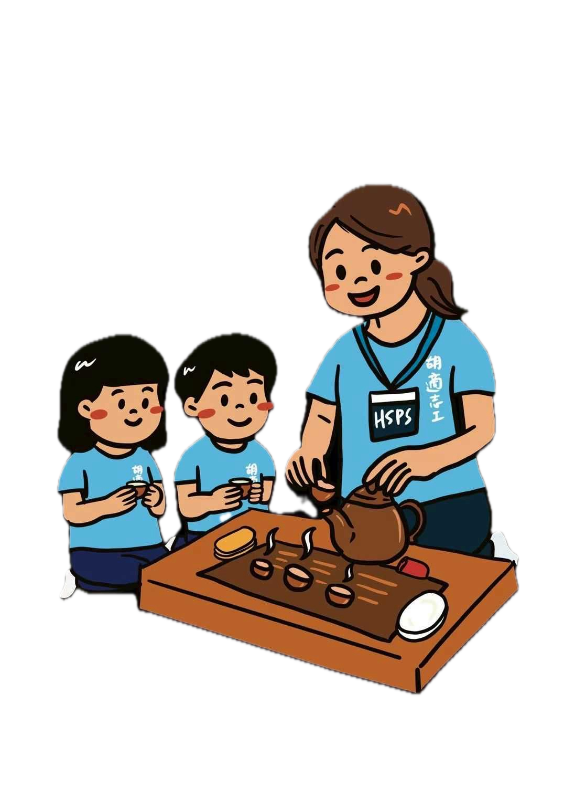
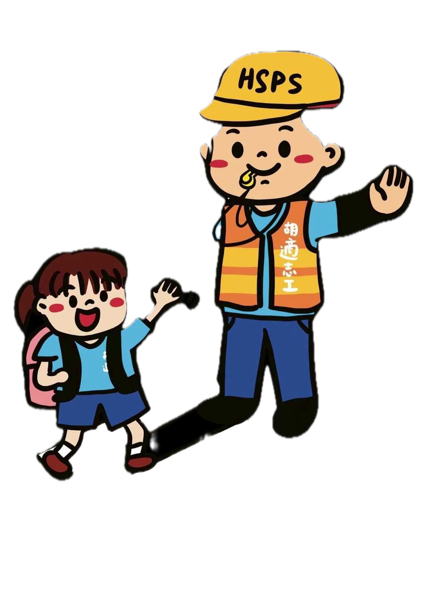
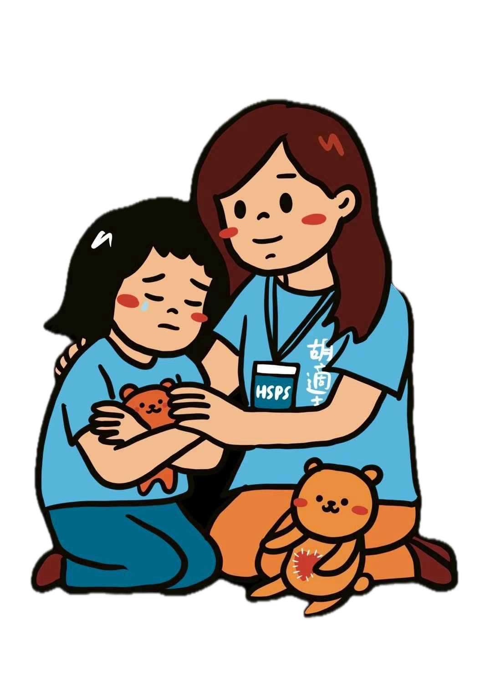
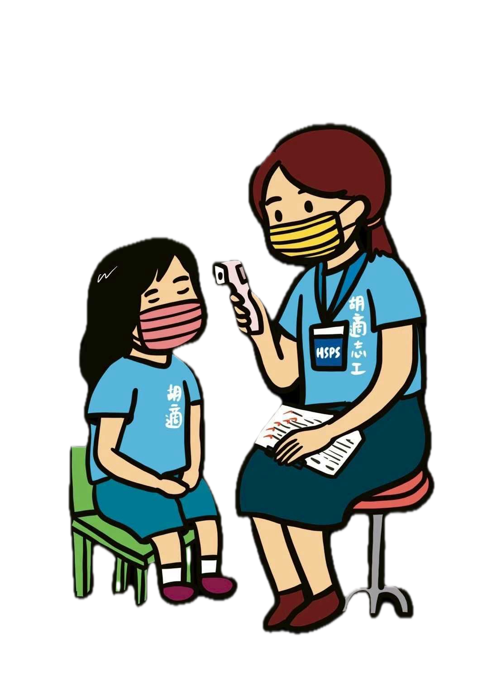

REGISTER NOW · 立即登記
選擇最適合您的報名／觀望動線
您可以選擇直接內嵌登記表單，或先加入 LINE 群向組長諮詢！
動線 A：線上快速登記
免填身分證高敏個資 · 免處罰疑慮

個資安全與隱私承諾
報名資料僅用於志工團聯絡及任務通知。身分證字號、詳細生日等投保高敏資料，將於進群確認後再獨立辦理。
每週只需 40 分鐘，不需任何專業經驗。
加入胡適國小志工團，與孩子一同在溫暖的校園裡踏實同行。

assets/hero-illustration.png
胡適國小志工團由熱心的校園家長組成，默默在晨間輔導、校園安全、圖書館管理與各項活動中守護每一個孩子。
統整志工團所有人事調配，擔任志工團與對校窗口聯繫事宜。
協助團長工作指示，配合團務執行與各組協調。
協助團長工作指示，配合團務執行與資源連結。
點選底下標籤快速切換篩選，輕鬆看懂每個組別的工作內容與服務時間！
陪伴三至六年級學童進行數學基礎練習與觀念陪伴輔導。
協助小一新生注音符號認讀、國字筆順啟蒙與晨間閱讀陪伴。
字母發音帶領與課堂秩序維護（有現成教案與正式教師現場帶領）。

進班進行五段式品格教育繪本互動教學，引導孩子建立溫暖正向生活態度。

每週三陪伴四至六年級學童進行泡茶體驗與專注靜心沉澱。

校園周邊重要路口上下學交通安全守護與學童過馬路引導。
每月第一與第二個週二晨間陪伴一、二年級學童及「每月一繪」活動安全照護。
自由選擇排班時段，協助學童借還書、圖書歸位消毒、新書編排與館藏維護。
修剪綠植、植栽養護與校園花園綠化美化，給孩子更美好的自然學習環境。

配合學校輔導室排程，進行一對一關懷陪伴、桌遊、聊天繪畫與功課輔導。

配合健康服務中心，支援全校學童視力、齒科及各項定期健康檢查。
志工團文宣海報設計、活動傳單視覺美化與數位資訊管理（遠端即可參與）。
志工資料登記管理、年度團體保險投保作業、時數登錄、校園出入證與獎項申請。
不論您的平日時間如何安排，我們都提供極高彈性的發證與保險機制！
點擊網站報名按鈕，填寫稱呼、手機號碼與感興趣的志願組別。第一階段完全免填身分證字號與詳細個資，零負擔登記。
依據主管機關規範，出入證與年度保險採「雙軌發放原則」，時間安排超貼心：
領取的專屬校園志工出入證與志工團服，正式排班愉快上工，成為孩子在學校最堅強溫暖的靠山！
您可以選擇直接內嵌登記表單，或先加入 LINE 群向組長諮詢！
免填身分證高敏個資 · 免處罰疑慮
報名資料僅用於志工團聯絡及任務通知。身分證字號、詳細生日等投保高敏資料，將於進群確認後再獨立辦理。
了解您對於時間、教學能力與請假的疑慮，我們都有完善配套！